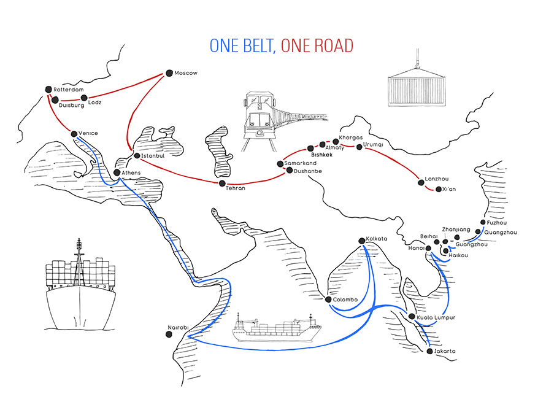

Durch die Seidenstrassse kennt man heutzutage den Wert von Seide Weltweit. Jedoch zeigt uns diese nicht nur das Ausmass des Seidenhandels, sondern auch die Umsetztung einer solch riesigen Handelstrasse welche so mache Hindernisse mit sich brachte. Wenn Sie mehr von der Seidenstrasse und deren Geschiche erfahren wollen, dann sind Sie hier genau richtig - Tauchen Sie mit uns in die Welt des Seidenhandels ein!
Was genau ist die Seidenstrasse?
Als Seidenstrasse bezeichnet man ein altes Netz von Karawanenstrassen, dessen Hauptroute den Mittelmeerraum auf dem Landweg über Zentralasien mit Ostasien verband. Die Bezeichnung geht auf den im 19. Jahrhundert lebenden deutschen Geografen Ferdinand von Richthofen zurück, der den Begriff 1877 erstmals verwendet hat.
Auf der antiken Seidenstrasse wurde in westliche Richtung hauptsächlich Seide, gen Osten vor allem Wolle, Gold und Silber gehandelt. Nicht nur Kaufleute, Gelehrte und Armeen nutzten ihr Netz, sondern auch Ideen, Religionen und ganze Kulturkreise diffundierten und migrierten auf den Routen von Ost nach West und umgekehrt: hierüber kamen z. B. der Nestorianismus und der Buddhismus nach China. Allerdings wird in der neueren Forschung davor gewarnt, das Handelsvolumen und die Verkehrsinfrastruktur der verschiedenen Handelsrouten zu überschätzen.
Trotzdem war Seide das aussergewöhnlichste Gut, welches gehandelt wurde und gab daher der Route auch seinen Namen. Im Westen war das Angebot für Seide sehr beschränkt, weswegen es einer der begehrtesten Luxusartikel jener Zeit war.
Der Weg des Seidenhandels
Der Ausgangspunkt für die 6’400 Kilometer lange Route war Xi‘an und verlief entlang der chinesischen Mauer in Richtung Nordwesten. Dabei wurde die Taklamakan-Wüste überquert, das Pamirgebirge überwunden und auf dem Weg nach Afghanistan Levante erreicht.
Zu Fuss oder mit Kamelen liefen die Menschen entlang der Seidenstrasse und verschifften dann die Ware mit Handelsgüter-Schiffen über das Mittelmeer. Durch den gestaffelten Transport von einem Händler zum anderen musste die Route nur selten von einer Person ganz alleine erzwungen werden.
Quellen:
- National Geographic. Stichwort "Was die neue Seidenstrasse mit der alten verbindet" (2017). Abgerufen am 5.12.2020 von https://www.nationalgeographic.de/geschichte-und-kultur/2017/12/was-die-neue-seidenstrasse-mit-der-alten-verbindet
- DW. Stichwort "Die Geschichte der Seidenstrasse" (2020). Abgerufen am 5.12.2020 von https://www.dw.com/de/die-geschichte-der-seidenstra%C3%9Fe/av-48634015
- zdfheute. Stichwort "Was China mit der Seidenstasse vorhat" (2029). Abgerufen am 5.12.2020 von https://www.zdf.de/nachrichten/heute/hintergrund-china-neue-seidenstrasse-100.html